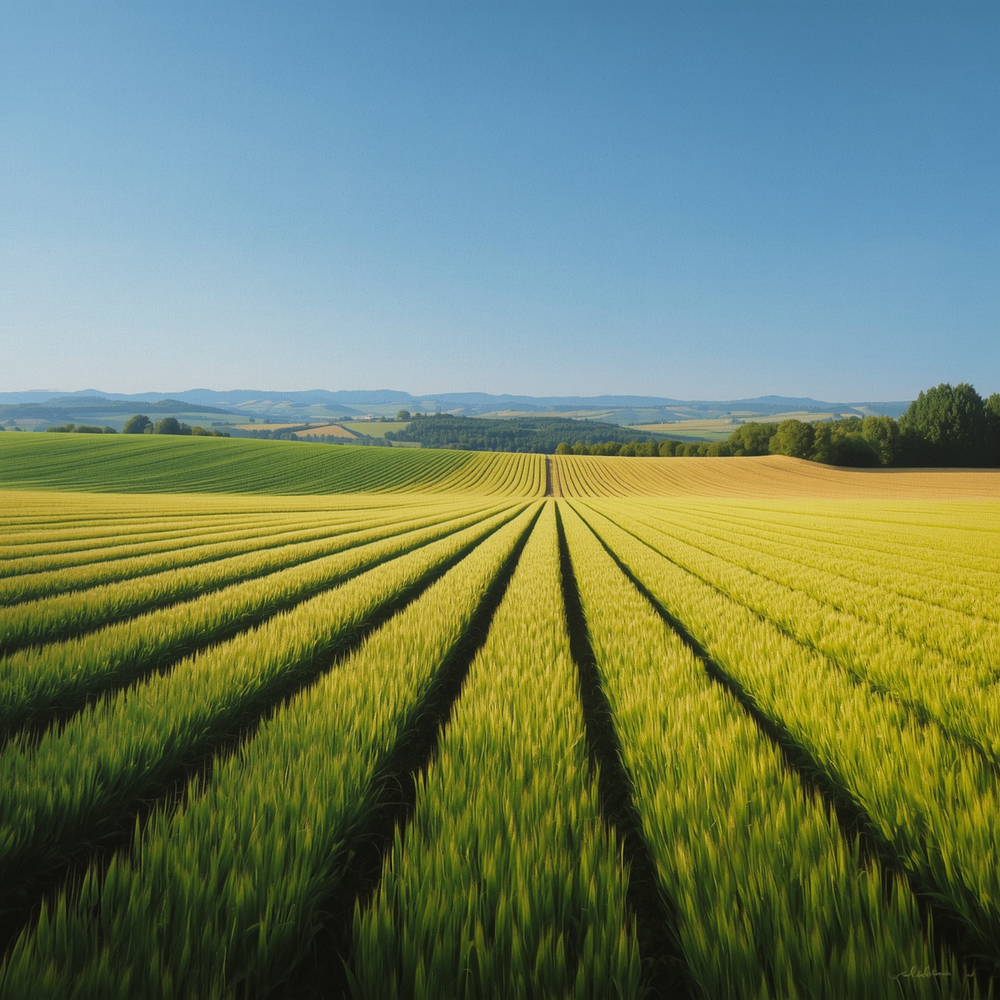
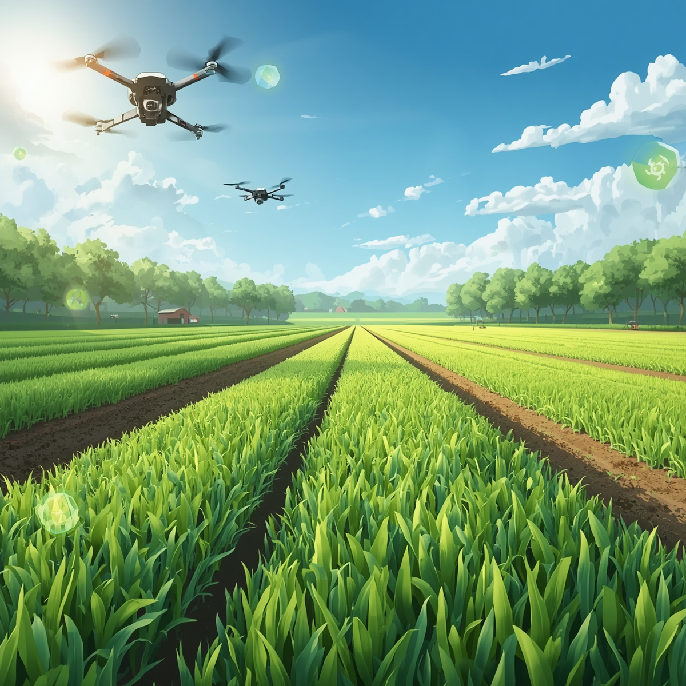
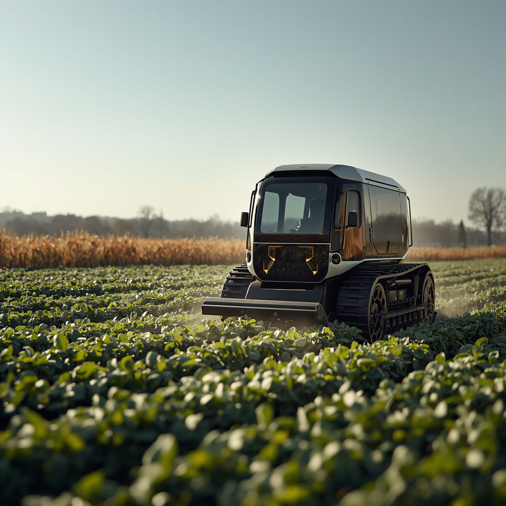

Biotecnologia
Microrganismos desenvolvidos por pesquisadores brasileiros ajudam a reduzir a dependência de fertilizantes químicos.
A união entre Inteligência Artificial, inovação agrícola e sustentabilidade está transformando o campo brasileiro em referência mundial de produtividade e tecnologia.
Explorar ConteúdoA agricultura sustentável ganha destaque global ao unir produtividade, inovação e adaptação tecnológica.
O Brasil vem se consolidando como protagonista em soluções agrícolas avançadas, especialmente através da biotecnologia, IA e uso inteligente de recursos.



Microrganismos desenvolvidos por pesquisadores brasileiros ajudam a reduzir a dependência de fertilizantes químicos.
O Brasil passa a ser reconhecido como referência em tecnologia agrícola sustentável.
Sistemas inteligentes permitem decisões mais rápidas e precisas em todas as etapas da produção.
Sensores inteligentes ajudam a reduzir desperdícios de água, fertilizantes e insumos.
Drones e algoritmos identificam doenças, ervas daninhas e falhas de plantio.
Previsões climáticas e produtivas permitem planejamento mais eficiente.
Máquinas autônomas aumentam a precisão operacional e reduzem custos.
Monitoramento contínuo melhora a qualidade e rastreabilidade dos alimentos.
Aplicações inteligentes reduzem impactos ambientais e aumentam eficiência.